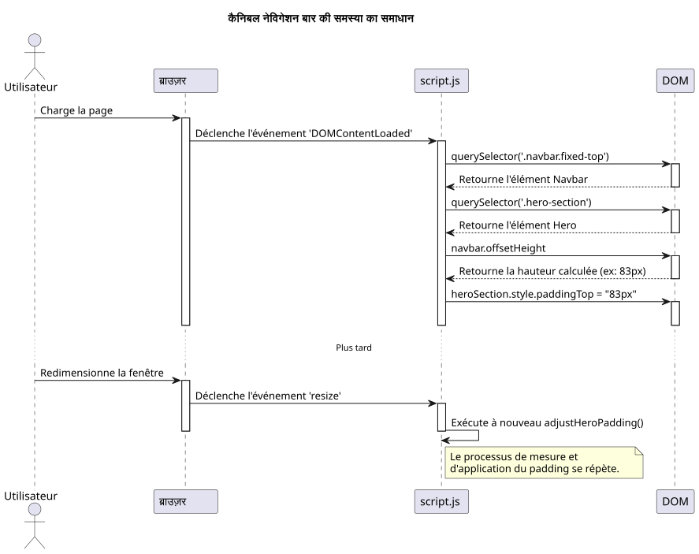
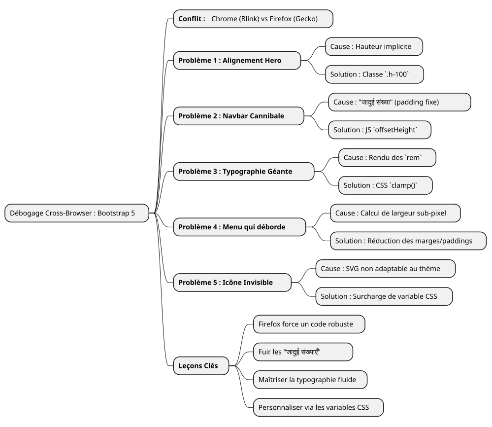

डिबगिंग की कहानी: बूटस्ट्रैप 5 के साथ फ़ायरफ़ॉक्स की अजीब हरकतों को काबू करना
Publié le 14 July 2025
|
पढ़ने का समय : लगभग 7 मिनट स्तर : मध्यवर्ती |
इस विस्तृत केस स्टडी में, हम ब्राउज़र संगतता की सबसे सामान्य और कभी‑कभी सबसे निराशाजनक समस्याओं का विश्लेषण करेंगे जो Bootstrap 5.2 के साथ UI मॉकअप बनाने के दौरान सामना किए जाते हैं। फ्लेक्सबॉक्स प्रबंधन से लेकर फ़ॉन्ट रेंडरिंग की सूक्ष्मता तक, हमारा डिबगिंग यात्रा देखें कि फायरफ़ॉक्स के तहत एक विकृत डिज़ाइन को कैसे सभी ब्राउज़रों पर पिक्सेल‑परफेक्ट अनुभव में बदलें।
युद्ध का मैदान : एक मॉकअप, तीन ब्राउज़र, बहुतेरे रेंडर
हर फ्रंट‑एंड डेवलपर को यह भावना होती है. घंटों की मेहनत के बाद मॉकअप आखिरकार परफेक्ट हो जाती है. संरेखण सटीक होते हैं, टाइपोग्राफी सुंदर होती है, एनिमेशन चिकनी होती हैं. हम संतोष की सांस लेते हैं, अपने काम को क्रोम (या ब्रेव, या एज) पर देखते हैं, फिर सावधानी बरतते हुए प्रोजेक्ट को फ़ायरफ़ॉक्स पर खोलते हैं. और उसी moment पर, आपदा आ जाती है. त element बाहर निकल जाते हैं, संरेखण टूट जाते हैं, फॉन्ट के आकार अव्यवस्थित हो जाते हैं… सुंदर सामंजस्य उड़ जाता है.
यह बिल्कुल वही परिदृश्य है जिसका सामना हमने एक नई पोर्टफ़ोलियो इंटरफेस विकसित करते समय किया। ज़रूरतें सरल थीं: एक आधुनिक, उत्तरदायी होम पेज, जिसमें थीम सेलेक्टर (हल्का, गहरा, और उच्च विपरीत), vanilla JavaScript का उपयोग करके और Bootstrap 5.2 के नवीनतम संस्करण के साथ।
यह लेख चमत्कारिक समाधानों की सूची नहीं है। यह हमारे डिबगिंग सत्र का लॉगबुक है, ब्लिंक (Chromium, Brave) और गेको (Firefox) इंजनों के रेंडरिंग अंतर के "क्यों" में एक गहरा गोता, और यह प्रदर्शित करता है कि मजबूत और आधुनिक समाधान हमेशा जल्दबाजी में लगाए गए पैचों से बेहतर होते हैं।
समस्या 1: सेक्शन "Hero" की उड़ती हुई कार्ड
पहला बग भी सबसे स्पष्ट था. स्वागत अनुभाग ("hero") दो कॉलम से मिलकर बना है: बायाँ ओर मुख्य शीर्षक; दायाँ ओर एक परिचय कार्ड।
-
लक्षण:Chrome और Brave पर, दोनों कॉलम लंबवत रूप से पूरी तरह से केंद्रित थे। फ़ायरफ़ॉक्स पर, दायाँ कार्ड अनियमित रूप से बाएँ पाठ के नीचे गिर रहा था।
-
जाँच :HTML कोड फिर भी सरल और सही लग रहा था, Bootstrap के मानक क्लासेस का उपयोग करके।
<section id="home" class="hero-section">
<div class="container">
<!-- Cette ligne est la clé du problème -->
<div class="row align-items-center min-vh-100">
<div class="col-lg-6">
<!-- Contenu de gauche -->
</div>
<div class="col-lg-6">
<!-- Carte de droite -->
</div>
</div>
</div>
</section>हमारा अनुकूलित CSS के लिए`.hero-section`परिभाषित कर रहा था`display: flex` et align-items: center, और कक्षा`min-vh-100`दिया गया था एक न्यूनतम ऊँचाई पंक्ति को (div.row). तो फ़ायरफ़ॉक्स ने कॉलम को केंद्रित करने से क्यों इनकार कर दिया ?
-
गहरा कारण :यह एक पाठ्यपुस्तक उदाहरण है कि रेंडर इंजन निहित ऊँचाइयों की व्याख्या कैसे करते हैं। La`<section>`की एक`min-height`, लेकिन नहीं`height`स्पष्ट. लागू करने के लिए`align-items-center`के भीतर`div.row`, Firefox को इस कंटेनर की संदर्भ ऊंचाई जानने की आवश्यकता है। जैसे उसके माता-पिता (
div.containeret la `<section>`खुद) की कोई ऊँचाई नहीं थीसख्त, Firefox खो गया था। Blink इंजन, अधिक उदार, की "deviner" करने की क्षमता रखता है और तत्वों को केंद्रित करने में सक्षम है। Gecko, विनिर्देश के प्रति अधिक पालन करने वाला, ऐसा नहीं करता। -
हल :�ऊँचाई स्पष्ट करें। हमने मजबूर किया वह`.container` et le `.row`अपने संबंधित पैरेंट की 100% ऊँचाई लेने के लिए यूटिलिटी क्लास का उपयोग करना`h-100`Bootstrap का
<section id="home" class="hero-section">
<div class="container h-100">
<div class="row align-items-center min-vh-100 h-100">
<!-- ... -->
</div>
</div>
</section>|
जब एक`align-items`Flexbox लंबवत अक्ष पर अपेक्षा के अनुसार काम नहीं करता, हमेशा सुनिश्चित करें कि कंटेनर में एक ऊँचाई है ( |
समस्या 2 : कैनिबल नेविगेशन बार
-
लक्षण : Le `padding`यह क्रोम पर पर्याप्त था, लेकिन फायरफ़ॉक्स पर नहीं, जहाँ शीर्षक हमेशा आंशिक रूप से छिपा रहता था।
-
गहरा कारण:एक "जादुई संख्या" का उपयोग (
80px) यह एक बहुत खराब अभ्यास है। एक तत्व की ऊँचाई, जैसे कि नेविगेशन बार, कुछ पिक्सेल तक एक ब्राउज़र से दूसरे ब्राउज़र में बदल सकती है, क्योंकि फ़ॉन्ट रेंडरिंग, स्पेसिंग या उपयोगकर्ता विकल्पों में सूक्ष्म अंतर होते हैं। एक स्थिर मान पर निर्भर रहना एक नाज़ुक डिज़ाइन की रेसिपी है। -
समाधान:JavaScript में एक गतिशील और अनफ़ेलिबल समाधान। हमने एक छोटा स्क्रिप्ट लिखा:
-
पेज के रेंडर होने के बाद नेविगेशन बार की वास्तविक ऊँचाई मापें।
-
इस मापी हुई ऊँचाई को लागू करें`padding-top`Hero" सेक्शन में
-
इस फ़ंक्शन को हर बार विंडो के आकार बदलने पर फिर से चलाएँ ताकि बदलावों के अनुकूल बनाया जा सके (जैसे हैमबर्गर मेन्यू में स्विच करना).
document.addEventListener('DOMContentLoaded', function() {
function adjustHeroPadding() {
const navbar = document.querySelector('.navbar.fixed-top');
const heroSection = document.querySelector('.hero-section');
if (navbar && heroSection) {
const navbarHeight = navbar.offsetHeight;
heroSection.style.paddingTop = navbarHeight + 'px';
}
}
// Ajuster au chargement et au redimensionnement
adjustHeroPadding();
window.addEventListener('resize', adjustHeroPadding);
});
समांतर में, हमने बेशक नियम हटा दिया`padding-top: 80px;`हमारी फ़ाइल का`styles.css`.
समस्या 3: अराजक टाइपोग्राफी
-
लक्षण :फ़ायरफ़ॉक्स पर, "Développeur Formateur…" शीर्षक का फ़ॉन्ट विशाल था, लगभग चौंकाने वाला, जबकि यह अन्य ब्राउज़र पर सामंजस्यपूर्ण थी।
-
गहरा कारण :शीर्षक ने एक क्लास का उपयोग किया`display-4`बूटस्ट्रैप का ये कक्षाएं प्रतिक्रियाशील फॉन्ट आकार का उपयोग करती हैं, जो अक्सर इकाई पर आधारित होती हैं`rem`फिर से, फ़ायरफ़ॉक्स का रेंडरिंग एल्गोरिदम, "Inter" फ़ॉन्ट के साथ संयुक्त, हमारे 1920x1080 रिज़ॉल्यूशन पर आकार की बहुत बड़ी गणना हो रही थी।
-
समाधान:CSS फ़ंक्शन के साथ नियंत्रण पुनः प्राप्त करें`clamp()
. यह सुविधा सुचारू टाइपोग्राफी के लिए एक क्रांति है। यह आपको तीन मानों के साथ एक फ़ॉन्ट आकार निर्धारित करने की अनुमति देता है: एक न्यूनतम आकार, एक "préférée" आकार (जो दृश्य की चौड़ाई के अनुसार अनुकूलित होता है,`vw), और एक अधिकतम आकार।
.hero-content h1 {
color: var(--text-primary);
line-height: 1.2;
/*
Min: 2rem
Préférée: s'adapte à la vue
Max: 2.5rem (40px)
*/
font-size: clamp(2rem, 1.2rem + 1.5vw, 2.5rem);
}के साथ`clamp(), हम ब्राउज़र से कह सके: "स्क्रीन के साथ फ़ॉन्ट बढ़ाएँ, लेकिन अधिक नहींकभी नहींसीमा का`2.5rem. इसने सभी ब्राउज़रों पर रेंडरिंग को तुरंत समायोजित कर दिया, जिससे हमें अंतिम दिखावट पर पूर्ण नियंत्रण मिल गया।
समस्या 4 : नेविगेशन बार जो बाहर निकलती है
-
लक्षण:1920x1080 स्क्रीन पर, मेनू के अंतिम लिंक ("Blog", "Contact") स्क्रीन के दाहिनी ओर धकेल दिए गए थे, लेकिन केवल फ़ायरफ़ॉक्स पर.
-
गहरा कारण:कई असफल प्रयासों के बाद (बूटस्ट्रैप के ब्रेकपॉइंट्स बदलने`lg` à
xl`फिर`xxl) हमने समझा। कारण बूटस्ट्रैप की लॉजिक नहीं थी, बल्कि सरल चौड़ाई की गणना थी। फ़ायरफ़ॉक्स पर, सभी लिंक की चौड़ाइयों का योग, उनके शामिल`padding` et `margin`sub-pixel के स्तर तक, यह légèrement 1920 पिक्सेल से अधिक थी। Chrome पर, यही समान योग légèrement कम थी। हमें कुछ पिक्सेल की कमी थी। -
समाधान:एक सर्जिकल स्तर के अंतराल में कमी। क्योंकि फ़ायरफ़ॉक्स को विशेष रूप से लक्षित करना पुराने CSS “hacks” के साथ बाहर के सवाल में था, एकमात्र समाधान एक सामान्य शैली खोजने का था जो हर जगह काम करती। हमने इसलिए प्रत्येक नेविगेशन लिंक के क्षैतिज मार्जिन और पैडिंग को थोड़ा कम कर दिया।
/* La version finale, légèrement plus compacte */
.navbar-nav .nav-link {
font-size: 0.9rem; /* 90% de la taille de base */
color: var(--text-primary) !important;
font-weight: 500;
margin: 0 0.2rem;
padding: 0.5rem 0.5rem !important;
border-radius: 0.375rem;
transition: all 0.3s ease;
}यह कमी, एकल तत्व पर नग्न आँख से लगभग अदृश्य, हमें सामूहिक रूप से आवश्यक स्थान प्रदान कर दिया जिससे कि सभी लिंक फ़ायरफ़ॉक्स के फ्रेम में आ जाएँ, जबकि अन्य ब्राउज़र पर लगभग समान दिखावट बनी रहे।
समस्या 5: अदृश्य हैम्बर्गर मेनू
अंतिम समस्या, और कम नहीं थी, मोबाइल एक्सेसिबिलिटी से संबंधित थी।
-
लक्षण :रिस्पॉन्सिव मोड (मेनू "hamburger") में, मेनू का आइकॉन थीम "dark" और "high-contrast" पर अदृश्य था।
-
गहरा कारण :Bootstrap 5 का मेनू आइकन एक`background-image`(एक URL में एन्कोड किया गया SVG)। डिफ़ॉल्ट रूप से, इसकी रेखा का रंग गहरा होता है, हल्के पृष्ठभूमि के लिए अनुकूलित। यह थीम परिवर्तन के अनुसार स्वचालित रूप से अनुकूल नहीं होती।
-
समाधान :Bootstrap के CSS चर का उपयोग करके आइकन को ओवरराइड करें। हमने एक नया SVG आइकन निर्धारित किया, लेकिन इस बार एक सफेद स्ट्रोक के साथ।
#ffffff), और हमने इसे विशेष रूप से लागू किया जब विषय`dark` ou `high-contrast`वे सक्रिय हैं।
/* ======================
Fix pour l'icône du menu Burger (Blanc)
====================== */
[data-bs-theme="dark"] .navbar-toggler-icon,
[data-bs-theme="high-contrast"] .navbar-toggler-icon {
--bs-navbar-toggler-icon-bg: url("data:image/svg+xml,%3csvg xmlns='http://www.w3.org/2000/svg' viewBox='0 0 30 30'%3e%3cpath stroke='%23ffffff' stroke-linecap='round' stroke-miterlimit='10' stroke-width='2' d='M4 7h22M4 15h22M4 23h22'/%3e%3c/svg%3e");
}|
बूटस्ट्रैप घटकों जैसे इस का अनुकूलन अब CSS चर के ओवरराइड के माध्यम से बढ़ता जा रहा है ( |
निष्कर्ष: अथक डिबगिंग के सबक
यह यात्रा, हालांकि कभी‑कभी निराशाजनक होती है, सीखों से भरपूर है। हर हल की गई समस्या वेब विकास के एक मौलिक सत्य को मजबूत करती है :कुछ भी एक कठोर बहु-ब्राउज़र परीक्षण का विकल्प नहीं है.

ये हैं सीख जो हमने रखी हैं :
-
Firefox एक सहयोगी है :इसकी CSS मानकों के प्रति सबसे बड़ी वफ़ादारी हमें अधिक मजबूत और कम अस्पष्ट कोड लिखने के लिए मजबूर करती है।
-
जादुई संख्याओं से बचें :स्थिर मान (जैसे`padding-top: 80px`) समय bombs हैं। हमेशा गतिशील समाधानों को प्राथमिकता दें या सापेक्ष (Flexbox, Grid)।
-
अपनी टाइपोग्राफी को मास्टर करें:इस्तेमाल करें`clamp()`अनुकूलन योग्य फ़ॉन्ट के आकार पर पूर्ण नियंत्रण रखने के लिए।
-
घटक के रूप में सोचें:बूटस्ट्रैप को अनुकूलित करने के लिए, उसके CSS चरों को ओवरराइड करें, बजाय फ्रेमवर्क को ओवरराइट करने वाले नियमों को गुणा करने के।
-
एक ब्राउज़र मत लक्ष्य कीजिए:समाधान लगभग कभी भी किसी विशिष्ट ब्राउज़र के लिए "hack" करने का नहीं होता, बल्कि एक सामान्य शैली खोजने का होती है जो हर जगह काम करती है।
अंत में, मॉकअप अब मजबूत, पूर्वानुमान योग्य और टेम्प्लेटिंग सिस्टम में एकीकृत होने के लिए तैयार है। प्रत्येक ठीक किया गया बग असफलता नहीं था, बल्कि बेहतर गुणवत्ता वाले कोड की ओर एक कदम था।